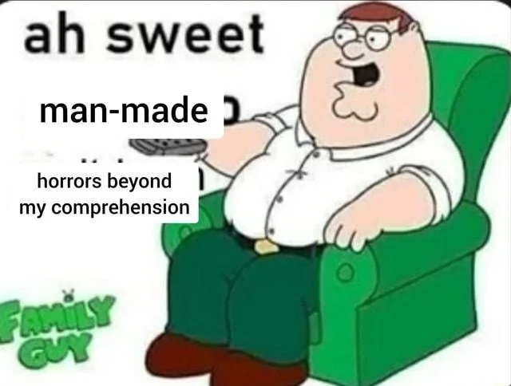

Tecnologia e Classe de 17/10/24
Sobre o canal 'Central Pandora'
que maneiro horrores feitos pelo homem além da minha compreensão

Isso é tipo o filme HER né?
https://arstechnica.com/ai/2024/10/man-learns-hes-being-dumped-via-dystopian-ai-summary-of-texts
IA para mandar currículo
https://www.404media.co/i-applied-to-2-843-roles-the-rise-of-ai-powered-job-application-bots
- A ferramenta Auto_Jobs_Applier_AIHawk usa o LinkedIn para encontrar vagas, preencher informações biográficas, gera currículos e cartas de apresentação personalizados, e aplica automaticamente para várias vagas em minutos
- Pode ser configurado em 15 minutos por qualquer pessoa com conhecimentos básicos de Python, exigindo apenas ajustes no código e uma chave de API da OpenAI.
- Se tornou viral no GitHub, com milhares de usuários utilizando-a para se candidatar a empregos em massa, resultando em entrevistas e até ofertas de trabalho para alguns.
- O uso de IA na candidatura e triagem de currículos está criando um ciclo automatizado, onde bots escrevem cartas de apresentação que são lidas por outros bots. Teoria da Internet 💀
- Federico Elia, criador do AI Hawk, afirmou que sua intenção é nivelar o campo de jogo entre candidatos e empresas, automatizando tarefas repetitivas e personalizando candidaturas a vagas.
- O LinkedIn veta o uso de ferramentas de IA para esse tipo de atividade, porém promete em breve lançar as suas próprias ferramentas.
https://github.com/feder-cr/Auto_Jobs_Applier_AIHawk/
Wikipedia VS IA
Editores da Wikipedia formam grupo para combater conteúdos gerados por IA: de acordo com os membros, o objetivo é proteger o site contra desinformação, que já está afetando resultados de busca no Google, livros na Amazon e revistas acadêmicas. Para isso, o grupo detecta conteúdos que apresentam sinais claros de serem artificiais, focando em termos comumente utilizados pelos modelos. Um exemplo é o artigo sobre o Chester Mental Health Center, que, em novembro de 2023, incluía a frase “Até a minha última atualização de conhecimento em janeiro de 2022”. As informações são do site Slashdot.
https://www.404media.co/the-editors-protecting-wikipedia-from-ai-hoaxes/
O robô do Elon Musk
Evento “We, Robot” da Tesla apresenta robotáxis e destaca capacidades do robô Optimus: o Cybercab, previsto para antes de 2027, não contará com volante ou pedais, e poderá ser carregado por indução, dispensando o uso de cabos; o Robovan é uma van autônoma projetada para transportar até 20 passageiros; o robô humanoide Optimus ganhou destaque no evento, com vídeos mostrando que ele poderia realizar tarefas do dia a dia, como levar pacotes para dentro de casa e regar plantas. Depois da apresentação, o público pôde interagir com eles, que fizeram gestos simples, como acenar, segurar um copo de gelo e entregar pequenas sacolas de presentes, além de jogar pedra, papel e tesoura com um dos convidados. Elon Musk afirma que o Optimus poderá custar entre 20 mil e 30 mil dólares a longo prazo, e prevê que ele será o “maior produto de todos os tempos” e representará uma “transformação fundamental para a civilização”. As informações são dos sites The Guardian e The Verge.
Dança robozinho dança
IBM e outras 32 multinacionais acusadas de cartel de contratação
https://www.sindpd.org.br/sindpd/site/noticia.jsp?id=1728659964862&p=1
https://www.baguete.com.br/noticias/rhs-de-multinacionais-acusados-de-cartel?p=1